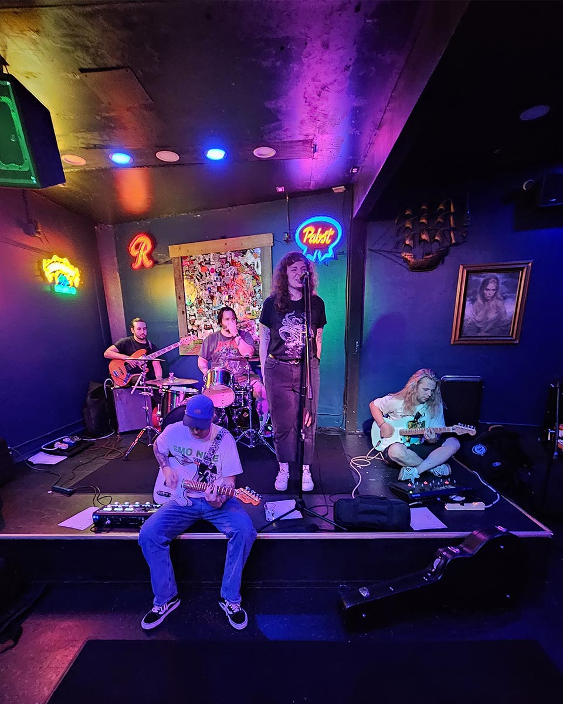
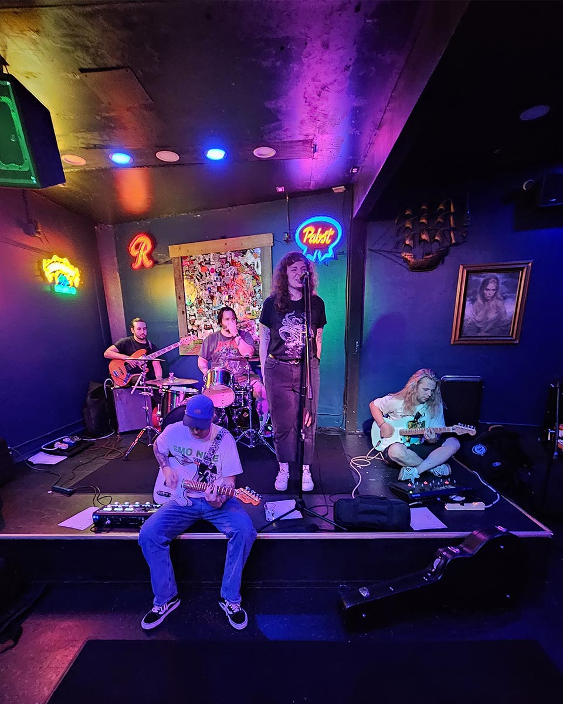

About us
Seattle-based punk quintet Wave Function formed in early 2023 with little more than a dream to play great alternative music. The 5 have since developed a nostalgia-soaked sound, beckoning the return of everything from 2000s emo and pop punk, to 2000s indie and alt rock. Their first release, Collapse is streaming now on all platforms

 
